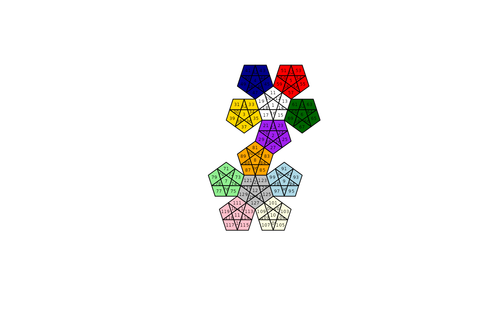
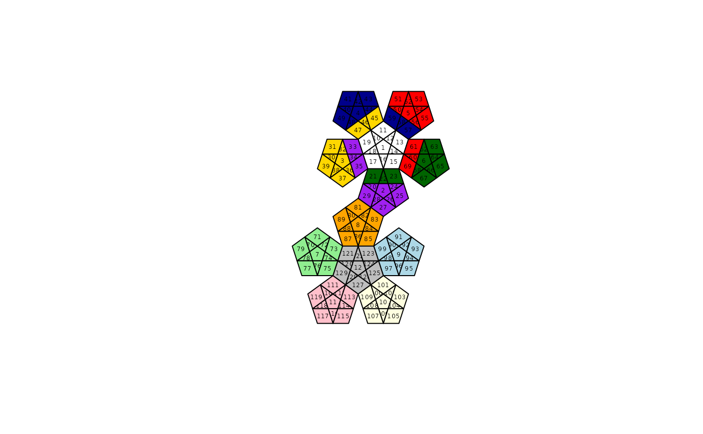
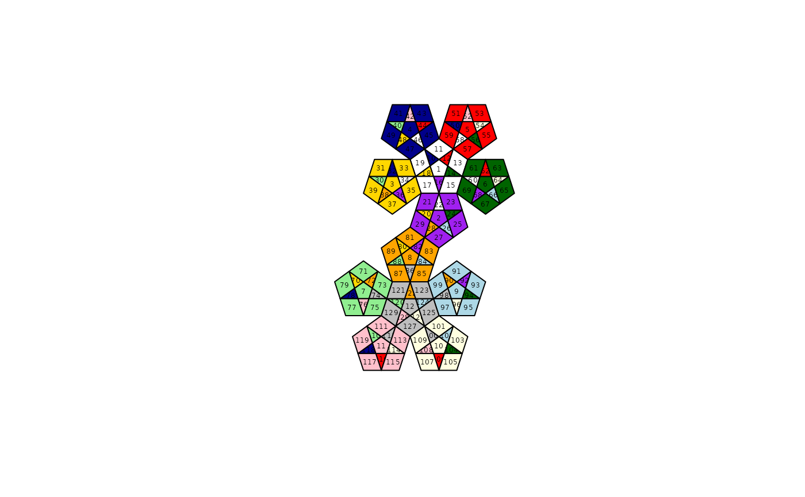

Plotting routine for megaminx sequences
megaminx_plotter.RdPlots a coloured diagram of a dodecahedron net representing a megaminx
Details
Function megaminx_plotter() plots a coloured diagram of a
dodecahedron net representing a megaminx. The argument may be
specified as a sequence of turns that are applied to the megaminx from
START.
The function uses rather complicated internal variables
pentagons, triangles, and quads whose meaning and
genesis is discussed in heavily-documented file inst/guide.R.
The diagram is centered so that the common vertex of triangles 28 and 82 is at \((0,0)\).
Examples
data("megaminx")
megaminx_plotter() # START

megaminx_plotter(W) # after turning the White face one click

megaminx_plotter(superflip)

size <- 0.95
o <- 290
if (FALSE) { # \dontrun{
pdf(file="fig1.pdf")
megaminx_plotter(M=size*diag(2),offset=c(-o,0),setup=TRUE)
megaminx_plotter(W,M=size*diag(2),offset=c(+o,0),setup=FALSE)
dev.off()
pdf(file="fig2.pdf")
p <- permprod(sample(megaminx,100,replace=TRUE))
megaminx_plotter(p,M=size*diag(2),offset=c(-o,0),setup=TRUE)
megaminx_plotter(superflip,M=size*diag(2),offset=c(+o,0),setup=FALSE)
dev.off()
} # }